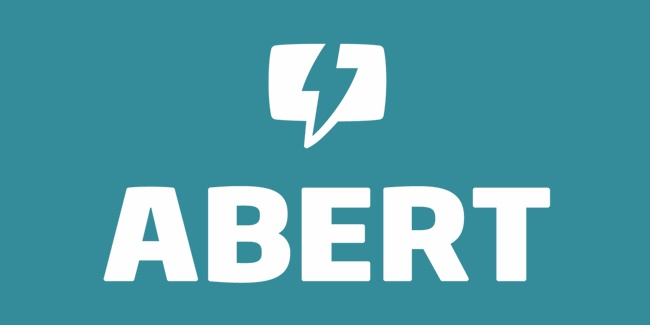

Programação
No SETAPI você encontrará
SolidWorks
Na edição 2017, a SETAPI contará com um treinamento mostrando as funcionalidades do software de modelagem 3D SolidWorks, muito difundido no mercado. Será ministrado pelo grupo AirLamp, grupo de aeromodelismo formado por alunos das Engenharias Mecânica e Controle e Automação do eixo da indústria.
Arremesso robótico
Pelo segundo ano seguido, a SETAPI trará o “arremesso robótico”, onde o participante terá a oportunidade de ver a robótica de maneira lúdica e divertida.
NOSSOS PALESTRANTES
Expedito Mota. Graduado em Engenharia Mecânica pela Universidade de Fortaleza (Unifor) com especialização em Engenharia de Manutenção Industrial pela Universidade de Fortaleza (Unifor). Atualmente é coordenador de Manutenção Industrial no grupo M. Dias Branco
Fábio Timbó Brito. Graduado em Tecnologia em Mecatrônica pelo Instituto Federal do Ceará (IFCE) com especialização em Automação Industrial pela Universidade Estadual do Ceará (UECE) e mestrado em Engenharia Elétrica e Eletrônica pela Universidade Federal do Ceará (UFC). Atualmente é professor efetivo e pesquisador do Instituto Federal do Ceará (IFCE) - Campus Maracanaú.
Contatos e Informações
Entre em contato conosco para mais informações
Av. Parque Central - Distrito Industrial I Maracanaú, Ceará
(85) 3878-6333


- 